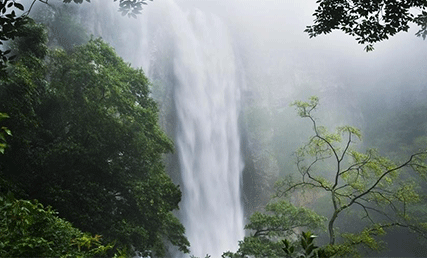
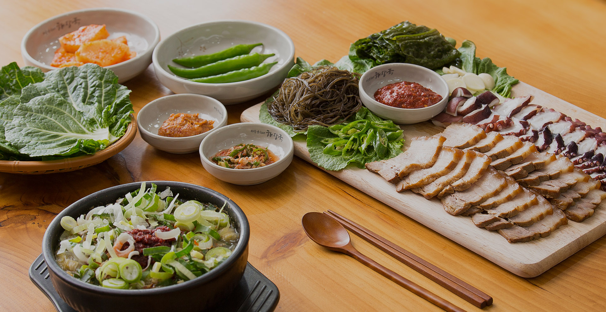

.png)
청정의 땅 제주, 그리고
돌과 땅을 만든 존재
설문대할망의 이야기를 아시나요?
설문대할망은 어마어마한 거인 여신으로, 제주도를 만들기 위해
치마폭에 흙을 담아 나르다, 그 흙이 쏟아지며 한사람이 되었다고 전해집니다.
제주의 흩어진 오름과 바위들은 모두 설문대할망의 흔적이라고 여겨지죠
대지를 만들고, 산을 일으키고, 바람을 품은 설문대할망의 이야기처럼,
자연과 신화가 조화롭게 공존하는 이곳 제주에서 당신의 이야기를 새롭게 시작해보세요.

‘폭싹 속았수다’ 와 함께하는 제주여행

아기해녀'고라니'가 소개하는 제주 물놀이 스팟

제주의 여름, 당신의 취향을 담다
제주 이야기
濟州
說話
제주의 시
제주의 특별한 문화, 공연과 전시 행사를 만나보세요
濟州
行

행사
진행중
보롬왓 메밀이야기
- 행사기간
- 행사시간
- 행사장소
- 입장료
- 2025.06.18(수) ~ 2025.07.05(토)
- 09:00 ~ 18:00
- 제주 서귀포시 표선면 번영로 2350-104
- 성인/청소년 6000원,
단체/지역주민 5000원,
어린이 4000원 (24개월 미만 무료)
#제주 #서귀포 #표선 #보롬왓 #메밀축제
내용 보기
전시
진행중
300년의 시간을 넘나들며
역사학적, 회화사적으로 매우 높은 가치를 지닌 유일한
기록화첩, 18세기 탐라순력도와 21세기 탐라순력도를
감성하며 제주를 여행해보세요
- 전시기간
- 전시시간
- 전시장소
- 전시가격
- 2025.06.07(토) ~ 2025.06.29(일)
- 10:00 ~ 18:00
- 서귀포 예술의 전당 전시실
- 무료입장
내용 보기
제주의 맛
제주의 자연은 화려하지 않지만, 소박함 속에 오래도록 머무는 멋이 있습니다.
계절의 아름다움을 느끼고 즐겨보세요.
濟州
美
한림해안로
view
숨겨진 바닷길.
몽환적인 바닷길을 걷고 싶다면 이곳!

엉또폭포
view
비오는 날만 나타나는,
제주가 숨겨둔 물의 마법.
비밀의숲
view
햇살도 조용히 머무는 숲,
나만 알고 싶은 제주의 속삭임
하늘연못
view
하늘이 잠시 머물다 간 자리.
돌과 물, 그리고 하늘이 만나는 곳
산양큰엉곶
view
하늘로 오르는 기찻길,
동화 속으로 들어온듯한 숲속 작은 마을.
녹차동굴
view
숨겨진 시간 속 제주
한 잎의 차향이, 동굴 속에 스며들다.
제주의 맛
제주의 맛은 자연이 가장 잘 아는 조리법으로 완성됩니다.
제주를 맛을 느껴보세요.
濟州
味
몽탄제주
view
짚불 향 쌓인 제주 재료, 몽환적 공간 속에서 즐기는
깊고 부드러운 우대갈비

은이네 해장국
view
제주의 땅과 바다가 담긴 진한 국물,
뜨끈한 한 그릇에 담긴 섬의 기억
제주관광정보센터 이용안내
상담안내
양질의 관광정보 전달을 위해
신뢰성 있는 제주의
대표 관광정보센터 운영
응급상황
제주특별자치도 자치경찰,
국가경찰, 119 안전신고센터,
제주특별자치도 관광협회 등
유관기관 연계를 통 응급 상황
출동 서비스 연결 지원

이용방법
온라인: 콜센터 운영
+82-64-740-6000
오프라인:
제주관광정보센터 방문 안내
비짓제주 제주웰컴센터 관광안내소 교통수단
— more자동차
-제주공항 입구에서 ‘중문, 한림, 신제주’방면으로 우회전
-공항로를 따라 1.7km 이동
-신대로를 따라 502m 이동
-연동사거리에서 좌회전
-선덕로를 따라 269m 이동 후 좌회전
버스
-제주국제공항 정류장에서 315번, 316번, 465번, 466번 버스 승차 후
연동 주민센터 정류장에서 하차(4개 정류장 이동)
-제주관광공사까지 약 278m 이동